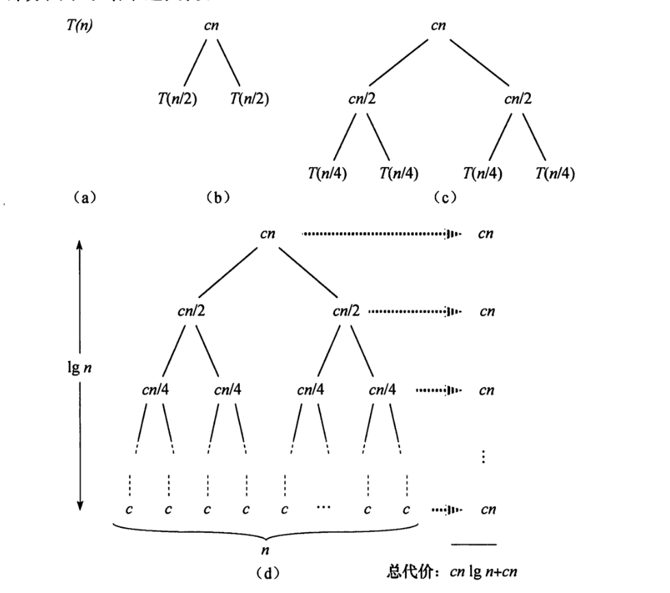

算法基础
排序算法 -- 插入排序
InsertionSort(A)
for j = 2 to A.length
key = A[j]
i = j - 1
while i > 0 and A[i] > key
A[i + 1] = A[i]
i = i - 1
A[i] = key
假定时间开销为c，插入算法的总时间开销（n代表代码行号）：
那么，最好情况是： 最坏情况是：
所以总开销就成了n的二次函数，可以用来表示，那么插入排序算法的算法复杂度可以表达成；
排序算法 -- 合并排序
MergeSort(A, p, r)
if p < r
q = (p + r) / 2
MergeSort(A, p, q)
MergeSort(A, q + 1, r)
Merge(A, p, q, r)
Merge(A, p, q, r)
n1 = q - p + 1
n2 = r - q
L = new int[n1 + 1]
R = new int[n2 + 1]
for i1 from 0 to n1 - 1
L[i1] = A[p + i1]
for i2 from 0 to n2 - 1
R[i2] = A[q + i2]
L[i1] = MaxInt
R[i2] = MaxInt
i = 0
j = 0
for index from p to r
if L[i] >= R[j]
result[index] = R[j]
j += 1
else
result[index] = L[i]
i += 1

对于合并排序，作为分治算法的一中，是把每个问题分解成2个子问题，从图中可以看出，一共会有logn次分解，每次分解有cn的开销，那么总开销可以近似为cn * logn，复杂度省略常数项，则复杂度为。